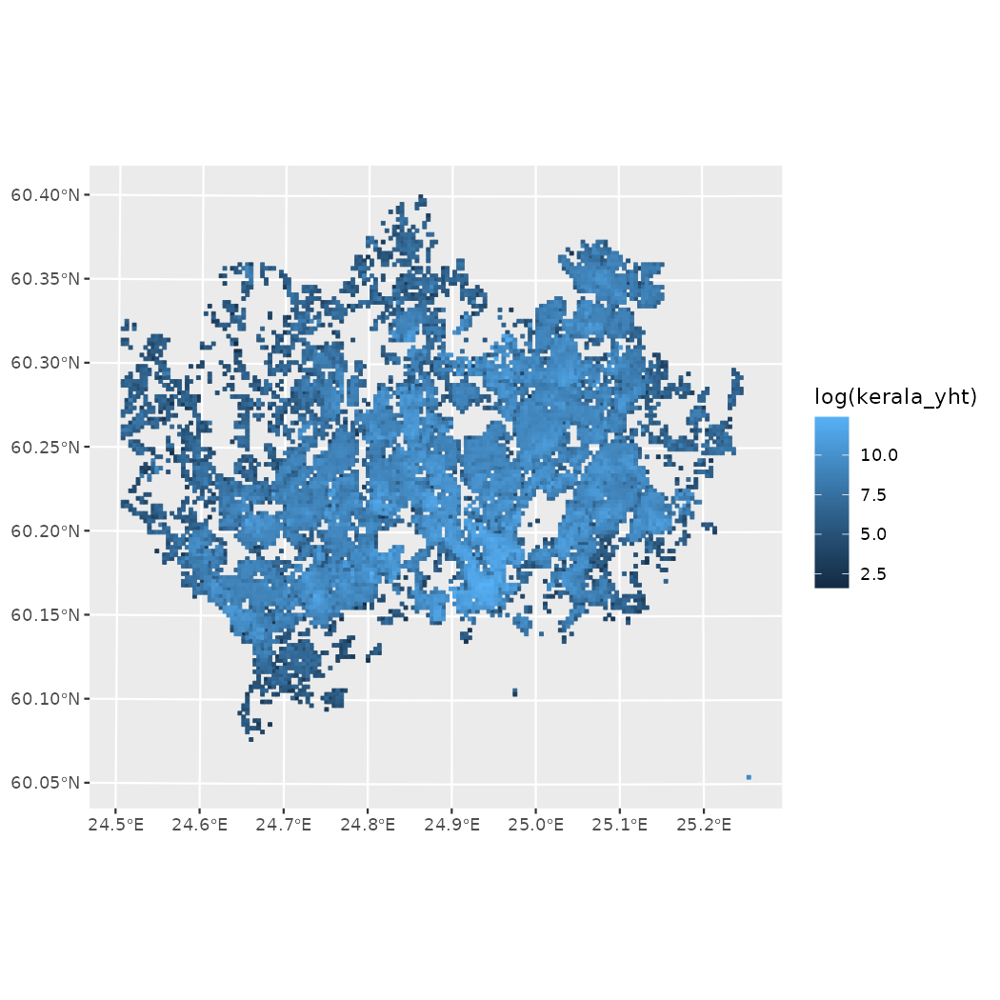
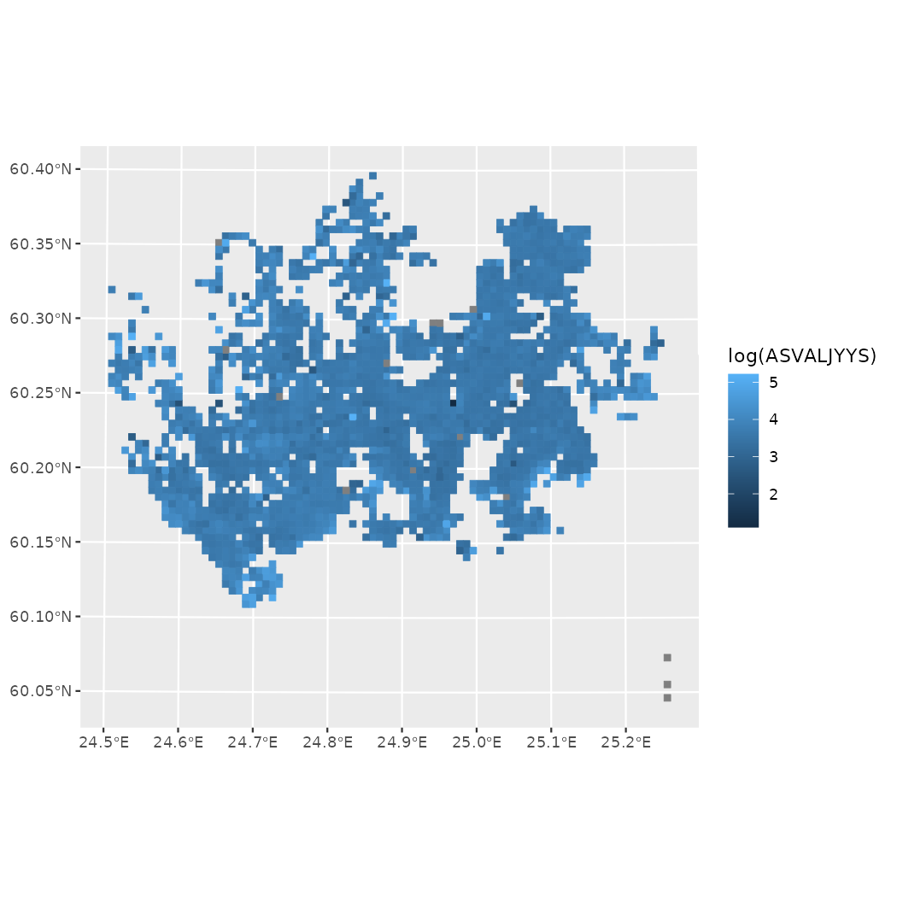
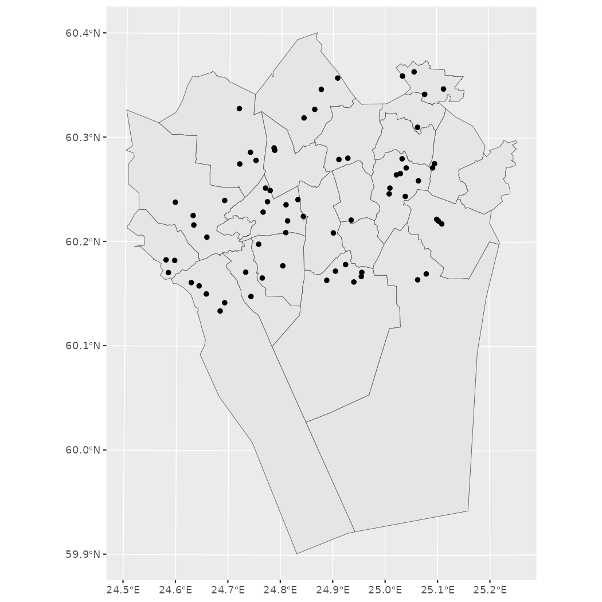

Helsinki open data R tools
Juuso Parkkinen, Pyry Kantanen
2022-11-30
Source:vignettes/helsinki_tutorial.Rmd
helsinki_tutorial.Rmdhelsinki - tutorial
helsinki R package provides tools to access open data from the Helsinki region in Finland.
For contact information, source code and bug reports, see the project’s GitHub page. For other similar packages and related blog posts, see the rOpenGov project website.
Installation
Release version for most users:
install.packages("helsinki")Development version for developers and other interested parties:
library(remotes)
remotes::install_github("ropengov/helsinki")Load the package.
API Access
The package has basic functions for interacting with WFS APIs,
courtesy of FMI2-package:
wfs_api() for returning “wfs_api” and to_sf()
for turning these objects into sf-objects.
All available features of a given API can be easily listed with the
get_feature_list() function. The API functions can,
however, be used with a wide variety of different base.url
parameters.
input_url <- "https://kartta.hsy.fi/geoserver/wfs"
hsy_features <- get_feature_list(base.url = input_url)
# Select only features which are related to water utilities and services
hsy_vesihuolto <- hsy_features[which(hsy_features$Namespace == "vesihuolto"),]
hsy_vesihuolto
#> Name
#> 126 vesihuolto:VH_Vesipostit_HSY
#> 253 vesihuolto:vesihuollon_toimipisteet
#> 255 vesihuolto:vh_hulevesiviemaroity_alue
#> 256 vesihuolto:vh_hva_alustavat_laajenemisalueet_21_22
#> 257 vesihuolto:vh_hva_hulevesiviemaroity_alue_2020
#> 258 vesihuolto:vh_hva_laajennusalueet
#> 259 vesihuolto:vh_hva_laajennusalueet_2020
#> 260 vesihuolto:vh_jatevesi_matkaaika_puhdistamolle
#> 261 vesihuolto:vh_muut_vesihuollon_toiminta_alueet
#> 262 vesihuolto:vh_sekaviemarointialue
#> 263 vesihuolto:vh_sekaviemarointialue_2020
#> 264 vesihuolto:vh_sekaviemarointialue_eriytettavat_2020
#> 265 vesihuolto:vh_toiminta_alue
#> 266 vesihuolto:vh_toiminta_alue_talousvesi
#> 267 vesihuolto:vh_toiminta_alueen_alustava_laajeneminen
#> 275 vesihuolto:ylimaarainen_verkostopaine
#> Title Namespace
#> 126 VH_Vesipostit_HSY vesihuolto
#> 253 vesihuollon_toimipisteet vesihuolto
#> 255 vh_hulevesiviemaroity_alue vesihuolto
#> 256 vh_hva_alustavat_laajenemisalueet_21_22 vesihuolto
#> 257 vh_hva_hulevesiviemaroity_alue_2020 vesihuolto
#> 258 vh_hva_laajennusalueet vesihuolto
#> 259 vh_hva_laajennusalueet_2020 vesihuolto
#> 260 vh_jatevesi_matkaaika_puhdistamolle vesihuolto
#> 261 vh_muut_vesihuollon_toiminta_alueet vesihuolto
#> 262 vh_sekaviemarointialue vesihuolto
#> 263 vh_sekaviemarointialue_2020 vesihuolto
#> 264 vh_sekaviemarointialue_eriytettavat_2020 vesihuolto
#> 265 vh_toiminta_alue vesihuolto
#> 266 vh_toiminta_alue_talousvesi vesihuolto
#> 267 vh_toiminta_alueen_alustava_laajeneminen vesihuolto
#> 275 ylimaarainen_verkostopaine vesihuolto
# We select our feature of interest from this list: Location of waterposts
feature_of_interest <- "vesihuolto:VH_Vesipostit_HSY"When the wanted feature and its Name (in other words: Namespace:Title
combination) is known, it can be downloaded with
get_feature() by providing the correct
base.url and the Name as the typename
parameter.
input_url <- "https://kartta.hsy.fi/geoserver/wfs"
feature_of_interest <- "vesihuolto:VH_Vesipostit_HSY"
# downloading a feature
waterposts <- get_feature(base.url = input_url, typename = feature_of_interest)
# Visualizing the location of waterposts
if (exists("waterposts")) {
if (!is.null(waterposts)) {
plot(waterposts$geom)
}
}
Dots on a blank canvas do not make much sense and therefore
helsinki-package has get_city_map() function for
downloading city district boundaries. An example of this is provided in
the Helsinki region district
maps section of this vignette.
Helsinki-package provides an easy-to-use menu-driven
select_feature() function that effectively combines
get_feature_list() and get_feature(). At
default it only returns the Name of the wanted function, but if
get parameter is set to TRUE, it returns an sf_object which
can be easily visualized.
input_url <- "https://kartta.hsy.fi/geoserver/wfs"
# Interactive example with select_feature
selected_feature <- select_feature(base.url = input_url)
feature <- get_feature(base.url = input_url, typename = selected_feature)
# Skipping a redundant step with parameter get = TRUE
feature <- select_feature(base.url = input_url, get = TRUE)Helsinki Region Environmental Services HSY open data
The above example shows a general use case which can easily be applied to Helsinki Region Environmental Services (HSY) WFS API as well as other service providers’ APIs.
For legacy reasons, helsinki-package has also some specialized functions that aim to make downloading often used data as easy as possible.
Specifically, there are two new functions that replace deprecated
functionalities from get_hsy() function:
get_vaestotietoruudukko() (population grid) and
get_rakennustietoruudukko() (building information
grid).
library(ggplot2)
pop_grid <- get_vaestotietoruudukko(year = 2018)
building_grid <- get_rakennustietoruudukko(year = 2020)
# Logarithmic scales to make the visualizations more discernible
if (!all(is.null(pop_grid), is.null(building_grid))) {
ggplot(pop_grid) + geom_sf(aes(colour=log(asukkaita), fill=log(asukkaita)))
ggplot(building_grid) + geom_sf(aes(colour=log(kerala_yht), fill=log(kerala_yht)))
}
With the previous version of the helsinki package, years 2015 to 2020
were supported. In 2022 a new year was added, 2011, demonstrating how
the API may be updated more regularly than the package. The
get_feature_list() function can be used to download
datasets that are not baked into included functions.
In addition to the datasets listed in the API getting updated, there are also legacy datasets that were never included in the API. We have added the functionality to download datasets from a wider selection of years, as zip files from a different file repository. These files may differ slightly from those downloaded via API and have different column names and larger grid squares and so on.
library(ggplot2)
pop_grid2 <- get_vaestotietoruudukko(year = 2011)
building_grid2 <- get_rakennustietoruudukko(year = 2011)
if (!all(is.null(pop_grid2), is.null(building_grid2))) {
ggplot(pop_grid2) + geom_sf(aes(colour=log(ASUKKAITA), fill=log(ASUKKAITA)))
ggplot(building_grid2) + geom_sf(aes(colour=log(ASVALJYYS), fill=log(ASVALJYYS)))
}
While easy enough to build, specialized functions such as these are probably not something that power users want to rely on in their work flows. They also add more manual phases to package maintenance and therefore are probably not the direction we’re heading in the future. If you feel differently about this and there is a dataset that gets a lot of use, feel free to drop us a suggestion in GitHub.
Service and event information
Function get_servicemap() retrieves regional service
data from city of Helsinki Service Map API, that
contains data from the Service Map.
# Search for "puisto" (park) (specify q="query")
search_puisto <- get_servicemap(query="search", q="puisto")
# Study results: 47 variables in the data frame
str(search_puisto, max.level = 1)
#> List of 4
#> $ count : int 2610
#> $ next : chr "http://api.hel.fi/servicemap/v2/search/?page=2&q=puisto"
#> $ previous: NULL
#> $ results :'data.frame': 20 obs. of 29 variables:We can see that this search returns a large number of results, over 2000. The results are returned as pages, where each page has 20 results by default. By giving no additional search parameters, we get 20 results from the first page of search results.
# Get names for the first 20 results
search_puisto$results$name.fi
#> [1] "Puistopolun peruskoulu" "Puistolan peruskoulu"
#> [3] "Kankarepuiston peruskoulu" "Pihkapuiston ala-asteen koulu"
#> [5] "Kaupunkiympäristön asiakaspalvelu" "Puistolanraitin ala-asteen koulu"
#> [7] "Juvanpuiston nuorisotila" "Puistolan kirjasto"
#> [9] "Kilonpuiston koulu" "Kytöpuiston koulu"
#> [11] "Juvanpuiston koulu" "Jalavapuiston koulu"
#> [13] "Tapiolan asukaspuisto" "Mankkaan asukaspuisto"
#> [15] "Karakallion asukaspuisto" "Leppävaaran asukaspuisto"
#> [17] "Perkkaan asukaspuisto" "Kivenlahden asukaspuisto"
#> [19] "Pisan asukaspuisto" "Pirkkolan liikuntapuiston uimahalli"
# See what kind of data is given for services
names(search_puisto$results)
#> [1] "id"
#> [2] "object_type"
#> [3] "municipality"
#> [4] "name.fi"
#> [5] "name.sv"
#> [6] "name.en"
#> [7] "street_address.fi"
#> [8] "street_address.sv"
#> [9] "street_address.en"
#> [10] "accessibility_shortcoming_count.rollator"
#> [11] "accessibility_shortcoming_count.stroller"
#> [12] "accessibility_shortcoming_count.wheelchair"
#> [13] "accessibility_shortcoming_count.hearing_aid"
#> [14] "accessibility_shortcoming_count.reduced_mobility"
#> [15] "accessibility_shortcoming_count.visually_impaired"
#> [16] "contract_type.id"
#> [17] "contract_type.description.fi"
#> [18] "contract_type.description.sv"
#> [19] "contract_type.description.en"
#> [20] "department.id"
#> [21] "department.municipality"
#> [22] "department.name.fi"
#> [23] "department.name.en"
#> [24] "department.name.sv"
#> [25] "department.street_address.fi"
#> [26] "department.street_address.sv"
#> [27] "department.street_address.en"
#> [28] "location.type"
#> [29] "location.coordinates"More results could be retrieved and viewed by giving additional
search parameters.
search_puisto <- get_servicemap(query="search", q="puisto", page_size = 30, page = 2)
str(search_puisto)
#> List of 4
#> $ count : int 2610
#> $ next : chr "http://api.hel.fi/servicemap/v2/search/?page=3&page_size=30&q=puisto"
#> $ previous: chr "http://api.hel.fi/servicemap/v2/search/?page_size=30&q=puisto"
#> $ results :'data.frame': 30 obs. of 29 variables:
#> ..$ id : int [1:30] 64122 64123 13 25 30 132 161 166 200 201 ...
#> ..$ object_type : chr [1:30] "unit" "unit" "unit" "unit" ...
#> ..$ municipality : chr [1:30] "espoo" "espoo" "helsinki" "helsinki" ...
#> ..$ name.fi : chr [1:30] "Hiirisuon asukaspuisto" "Järvenperän asukaspuisto" "Leikkipuisto Kannelmäki" "Leikkipuisto Piika" ...
#> ..$ name.sv : chr [1:30] "Hiirisuon asukaspuisto" "Järvenperän asukaspuisto" "Lekparken Kannelmäki" "Lekparken Piika" ...
#> ..$ name.en : chr [1:30] "Hiirisuon asukaspuisto" "Järvenperän asukaspuisto" "Playground Kannelmäki" "Playground Piika" ...
#> ..$ street_address.fi : chr [1:30] "Pohjoisentie 1" "Kulloonmäentie 20" "Kanneltie 1a" "Arentikuja 5" ...
#> ..$ street_address.sv : chr [1:30] "Norrmarksvägen 1" "Kullobackavägen 20" "Kantelevägen 1a" "Arrendegränden 5" ...
#> ..$ street_address.en : chr [1:30] "Pohjoisentie 1" "Kulloonmäentie 20" "Kanneltie 1a" "Arentikuja 5" ...
#> ..$ accessibility_shortcoming_count.rollator : int [1:30] NA NA 4 4 NA NA 1 2 3 6 ...
#> ..$ accessibility_shortcoming_count.stroller : int [1:30] NA NA 1 1 NA NA NA NA NA 1 ...
#> ..$ accessibility_shortcoming_count.wheelchair : int [1:30] NA NA 4 4 NA NA 1 2 4 6 ...
#> ..$ accessibility_shortcoming_count.hearing_aid : int [1:30] NA NA 1 1 NA NA 1 1 NA NA ...
#> ..$ accessibility_shortcoming_count.reduced_mobility : int [1:30] NA NA 4 2 NA NA 1 2 2 2 ...
#> ..$ accessibility_shortcoming_count.visually_impaired: int [1:30] NA NA 8 4 NA NA 2 5 4 5 ...
#> ..$ contract_type.id : chr [1:30] "municipal_service" "municipal_service" "municipal_service" "municipal_service" ...
#> ..$ contract_type.description.fi : chr [1:30] "kunnallinen palvelu" "kunnallinen palvelu" "kunnallinen palvelu" "kunnallinen palvelu" ...
#> ..$ contract_type.description.sv : chr [1:30] "kommunal tjänst" "kommunal tjänst" "kommunal tjänst" "kommunal tjänst" ...
#> ..$ contract_type.description.en : chr [1:30] "municipal service" "municipal service" "municipal service" "municipal service" ...
#> ..$ department.id : int [1:30] 64 64 146 146 103 200 190 190 176 176 ...
#> ..$ department.municipality : chr [1:30] "espoo" "espoo" "helsinki" "helsinki" ...
#> ..$ department.name.fi : chr [1:30] "Kasvun ja oppimisen toimiala, Espoo" "Kasvun ja oppimisen toimiala, Espoo" "Varhaiskasvatus ja esiopetus, alue 2, Läntinen" "Varhaiskasvatus ja esiopetus, alue 2, Läntinen" ...
#> ..$ department.name.sv : chr [1:30] "Sektorn för fostran och lärande, Esbo" "Sektorn för fostran och lärande, Esbo" "Varhaiskasvatus ja esiopetus, alue 2" "Varhaiskasvatus ja esiopetus, alue 2" ...
#> ..$ department.name.en : chr [1:30] "Growth and Learning Sector, Espoo" "Growth and Learning Sector, Espoo" "Early childhood education and preschool education Area 2" "Early childhood education and preschool education Area 2" ...
#> ..$ department.street_address.fi : chr [1:30] NA NA NA NA ...
#> ..$ department.street_address.sv : chr [1:30] NA NA NA NA ...
#> ..$ department.street_address.en : chr [1:30] NA NA NA NA ...
#> ..$ location.type : chr [1:30] "Point" "Point" "Point" "Point" ...
#> ..$ location.coordinates :List of 30
#> .. ..$ : num [1:2] 24.7 60.3
#> .. ..$ : num [1:2] 24.7 60.2
#> .. ..$ : num [1:2] 24.9 60.2
#> .. ..$ : num [1:2] 24.9 60.2
#> .. ..$ : num [1:2] 24.9 60.2
#> .. ..$ : num [1:2] 25 60.2
#> .. ..$ : num [1:2] 24.9 60.2
#> .. ..$ : num [1:2] 24.9 60.2
#> .. ..$ : num [1:2] 25 60.2
#> .. ..$ : num [1:2] 25.1 60.2
#> .. ..$ : num [1:2] 25.1 60.2
#> .. ..$ : num [1:2] 25.1 60.2
#> .. ..$ : num [1:2] 25.1 60.2
#> .. ..$ : num [1:2] 25.1 60.2
#> .. ..$ : num [1:2] 25 60.3
#> .. ..$ : num [1:2] 25.1 60.3
#> .. ..$ : num [1:2] 24.9 60.2
#> .. ..$ : num [1:2] 24.9 60.2
#> .. ..$ : num [1:2] 25.1 60.2
#> .. ..$ : num [1:2] 25 60.2
#> .. ..$ : num [1:2] 25 60.3
#> .. ..$ : num [1:2] 25 60.3
#> .. ..$ : num [1:2] 25 60.2
#> .. ..$ : num [1:2] 25.1 60.3
#> .. ..$ : num [1:2] 25.1 60.3
#> .. ..$ : num [1:2] 25.1 60.4
#> .. ..$ : num [1:2] 24.7 60.2
#> .. ..$ : num [1:2] 25.1 60.2
#> .. ..$ : num [1:2] 25 60.2
#> .. ..$ : num [1:2] 25 60.3
search_puisto$results$name.fi
#> [1] "Hiirisuon asukaspuisto" "Järvenperän asukaspuisto"
#> [3] "Leikkipuisto Kannelmäki" "Leikkipuisto Piika"
#> [5] "Leikkipuisto Maunula" "Leikkipuisto Brahe"
#> [7] "Leikkipuisto Taivallahti" "Leikkipuisto Seppä"
#> [9] "Leikkipuisto Orava" "Leikkipuisto Roihuvuori"
#> [11] "Leikkipuisto Kiiltotähti" "Leikkipuisto Rusthollari"
#> [13] "Leikkipuisto Myllynsiipi" "Leikkipuisto Iso-Antti"
#> [15] "Leikkipuisto Kesanto" "Leikkipuisto Kankarepuisto"
#> [17] "Leikkipuisto Strömberg" "Leikkipuisto Isonneva"
#> [19] "Leikkipuisto Lohikäärmepuisto" "Leikkipuisto Viikkari"
#> [21] "Puistolan palvelutalo" "Koillisen terveysasema/Puistola"
#> [23] "Leikkipuisto Arabia" "Näätäpuiston päiväkoti"
#> [25] "Latupuiston päiväkoti" "Ilvespuiston päiväkoti"
#> [27] "Olarin asukaspuisto" "Leikkipuisto Lampi"
#> [29] "Syötävä puisto" "Leikkipuisto Kotinummi"As we could see from above example, the returned data frame had 30 observations with 29 variables. At full width this output can be messy to handle in R console. One possible option would be to turn it into a more easily manageable tibble (which often is not a bad idea), another is to limit the extent of the query at the start.
Function get_linkedevents() retrieves regional event
data from the new Linked
Events API.
# Search for current events
events <- get_linkedevents(query="event")
# Get names for the first 20 results
events$data$name$fi
#> [1] "Den Besynnerliga Händelsen Med Hunden Om Natten"
#> [2] "Tatu Ja Patu Helsingissä"
#> [3] NA
#> [4] "Once + Replik!"
#> [5] "Saikkua, Kiitos! Osa 3"
#> [6] "Bolla"
#> [7] "Turvamies"
#> [8] "Niin Kuin Taivaassa"
#> [9] "Paahtimo"
#> [10] "Everstinna"
#> [11] "Lapset"
#> [12] "Club Act!One"
#> [13] "Kiviä Taskussa"
#> [14] "Baskervillen Koira"
#> [15] "Lapset"
#> [16] "Niin Kuin Taivaassa"
#> [17] "Kiviä Taskussa"
#> [18] "Lapset"
#> [19] "Niin Kuin Taivaassa"
#> [20] NA
# See what kind of data is given for events
names(events$data)
#> [1] "id" "location"
#> [3] "keywords" "super_event"
#> [5] "event_status" "type_id"
#> [7] "external_links" "offers"
#> [9] "data_source" "publisher"
#> [11] "sub_events" "images"
#> [13] "videos" "in_language"
#> [15] "audience" "created_time"
#> [17] "last_modified_time" "date_published"
#> [19] "start_time" "end_time"
#> [21] "custom_data" "audience_min_age"
#> [23] "audience_max_age" "super_event_type"
#> [25] "deleted" "maximum_attendee_capacity"
#> [27] "remaining_attendee_capacity" "minimum_attendee_capacity"
#> [29] "enrolment_start_time" "enrolment_end_time"
#> [31] "local" "search_vector_fi"
#> [33] "search_vector_en" "search_vector_sv"
#> [35] "replaced_by" "description"
#> [37] "location_extra_info" "info_url"
#> [39] "short_description" "provider"
#> [41] "name" "provider_contact_info"
#> [43] "@id" "@context"
#> [45] "@type"Helsinki region district maps
Helsinki region geographic data can be accessed from a WFS API by using the get_city_map() function. Data is available for all 4 cities in the capital region: Helsinki, Espoo, Vantaa and Kauniainen.
Administrative divisions can be accessed on 3 distinct levels: “suuralue”, “tilastoalue” and “pienalue”. Literal, completely unofficial translations for these could be “grand district”, “statistical area” and “(minor) district”. The naming convention of these levels is sometimes confusing even in Finnish documents and different names can vary by city and time.
The main takeaway is that “suuralue” is the highest-level division and “pienalue” is the most granular level of division. “Tilastoalue” is somewhere between these two. These are the names to be used even if the city of interest might not use them in their Finnish or English website.
As promised earlier in API Access, the following example gives an idea on how to visualize waterpost locations (and, of course, other types of spatial data as well) on capital region map.
helsinki <- get_city_map(city = "helsinki", level = "suuralue")
espoo <- get_city_map(city = "espoo", level = "suuralue")
vantaa <- get_city_map(city = "vantaa", level = "suuralue")
kauniainen <- get_city_map(city = "kauniainen", level = "suuralue")
library(ggplot2)
if (!all(is.null(helsinki), is.null(espoo), is.null(vantaa), is.null(kauniainen), is.null(waterposts))) {
ggplot() +
geom_sf(data = helsinki) +
geom_sf(data = espoo) +
geom_sf(data = vantaa) +
geom_sf(data = kauniainen) +
geom_sf(data = waterposts)
}
In addition, it is possible to download “aanestysalue” (voting district) divisions for the city of Helsinki. Currently this data is not available for other cities and it must be accessed from other sources.
map <- get_city_map(city = "helsinki", level = "suuralue")
voting_district <- get_city_map(city = "helsinki", level = "aanestysalue")
library(sf)
plot(sf::st_geometry(map))
plot(sf::st_geometry(voting_district))For other cities than Helsinki voting districts are currently not available.
Helsinki Region Infoshare statistics API
Function get_hri_stats() retrieves data from the Helsinki Region Infoshare statistics
API. Specify a dataset to retrieve. In this specific example we will
download the first item on the stats_list object. The output is a
three-dimensional array.
# Retrieve list of available data
stats_list <- get_hri_stats(query="")
# Show first results
head(stats_list)
#> NULL
#> "L113_viheralue_kaupunginosa"
#> NULL
#> "L32_yksikkopaastot"
#> NULL
#> "J1_loppusijoitettavat"
#> NULL
#> "I13_maailman_paastot"
#> NULL
#> "J13_sekajatteen_maara_kiinteistot"
#> Helsingin väestö äidinkielen mukaan 1.1.
#> "aluesarjat_a03s_hki_vakiluku_aidinkieli"
if (!is.null(stats_list)) {
# Retrieve a specific dataset
stats_res <- get_hri_stats(query=stats_list[1])
# Show the structure of the results
str(stats_res)
}
#> num [1:6, 1:34] 11606 5607 2.07 0.65 0.15 ...
#> - attr(*, "dimnames")=List of 2
#> ..$ muuttuja : chr [1:6] "Asukkaita" "Asukastiheys (hlö/km2)" "Maapinta-ala (km2)" "Viheralueiden pinta-ala (km2)" ...
#> ..$ peruspiiri: chr [1:34] "Vironniemi" "Ullanlinna" "Kampinmalmi" "Taka-Töölö" ...Licensing and Citations
Citing the data
See help() to get citation information for each function
and related data sources.
If no such information is explicitly stated, see data provider’s website for more information.
Citing the R package
citation("helsinki")
Kindly cite the helsinki R package as follows:
Juuso Parkkinen, Joona Lehtomaki, Pyry Kantanen, and Leo Lahti
(2022). helsinki R package. R package version 1.0.6 URL:
https://github.com/rOpenGov/helsinki
A BibTeX entry for LaTeX users is
@Misc{,
title = {helsinki R package},
author = {Juuso Parkkinen and Joona Lehtomaki and Pyry Kantanen and Leo Lahti},
url = {https://github.com/rOpenGov/helsinki},
year = {2022},
note = {R package version 1.0.6},
}
Many thanks for all contributors! For more info, see:
https://github.com/rOpenGov/helsinkiSession info
This vignette was created with
sessionInfo()
#> R version 4.2.2 (2022-10-31)
#> Platform: x86_64-pc-linux-gnu (64-bit)
#> Running under: Ubuntu 22.04.1 LTS
#>
#> Matrix products: default
#> BLAS: /usr/lib/x86_64-linux-gnu/openblas-pthread/libblas.so.3
#> LAPACK: /usr/lib/x86_64-linux-gnu/openblas-pthread/libopenblasp-r0.3.20.so
#>
#> locale:
#> [1] LC_CTYPE=C.UTF-8 LC_NUMERIC=C LC_TIME=C.UTF-8
#> [4] LC_COLLATE=C.UTF-8 LC_MONETARY=C.UTF-8 LC_MESSAGES=C.UTF-8
#> [7] LC_PAPER=C.UTF-8 LC_NAME=C LC_ADDRESS=C
#> [10] LC_TELEPHONE=C LC_MEASUREMENT=C.UTF-8 LC_IDENTIFICATION=C
#>
#> attached base packages:
#> [1] stats graphics grDevices utils datasets methods base
#>
#> other attached packages:
#> [1] ggplot2_3.4.0 helsinki_1.0.6
#>
#> loaded via a namespace (and not attached):
#> [1] tidyselect_1.2.0 xfun_0.35 bslib_0.4.1 purrr_0.3.5
#> [5] sf_1.0-9 colorspace_2.0-3 vctrs_0.5.1 generics_0.1.3
#> [9] htmltools_0.5.3 yaml_2.3.6 utf8_1.2.2 rlang_1.0.6
#> [13] e1071_1.7-12 pkgdown_2.0.6 jquerylib_0.1.4 pillar_1.8.1
#> [17] withr_2.5.0 glue_1.6.2 DBI_1.1.3 lifecycle_1.0.3
#> [21] stringr_1.4.1 munsell_0.5.0 gtable_0.3.1 ragg_1.2.4
#> [25] memoise_2.0.1 evaluate_0.18 labeling_0.4.2 knitr_1.41
#> [29] fastmap_1.1.0 curl_4.3.3 class_7.3-20 fansi_1.0.3
#> [33] highr_0.9 Rcpp_1.0.9 KernSmooth_2.23-20 scales_1.2.1
#> [37] classInt_0.4-8 cachem_1.0.6 desc_1.4.2 jsonlite_1.8.3
#> [41] farver_2.1.1 systemfonts_1.0.4 fs_1.5.2 textshaping_0.3.6
#> [45] digest_0.6.30 stringi_1.7.8 dplyr_1.0.10 rprojroot_2.0.3
#> [49] grid_4.2.2 cli_3.4.1 tools_4.2.2 magrittr_2.0.3
#> [53] sass_0.4.4 proxy_0.4-27 tibble_3.1.8 pkgconfig_2.0.3
#> [57] xml2_1.3.3 rmarkdown_2.18 httr_1.4.4 R6_2.5.1
#> [61] units_0.8-0 compiler_4.2.2